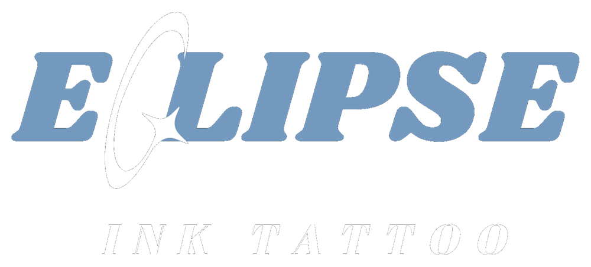

Fineline · Blackwork · Neo Tribal
Tatuajes personalizados inspirados en la precisión, el contraste y la anatomía
Sobre Eclipse Ink
Dibujar me acompaña desde chico. Antes pasaba más tiempo mirando el trabajo de artistas que admiro que haciendo otra cosa: probé óleo, acrílicos, grafito, portaminas y birome, y más adelante también el dibujo digital.
Siempre quise tatuar, pero durante mucho tiempo no tuve los medios para hacerlo. En agosto de 2025 compré mi primer kit de handpoke y empecé a experimentar conmigo mismo. Meses después incorporé una máquina y comencé a formarme y practicar de manera más constante, primero con personas cercanas y luego con mis primeros clientes.
Hoy trabajo desde casa, en un espacio dedicado al tatuaje, y también realizo visitas a domicilio. Mi trabajo se mueve principalmente entre fineline, blackwork, lettering, tribal, neo-tribal, cybersigilism y dotwork, adaptándome también a otros estilos según cada proyecto. Actualmente estoy enfocado en seguir desarrollando mi técnica dentro de estas áreas.
Eclipse Ink nació para exponer un trabajo de expo técnica en el colegio. Me gustó el nombre, la página se quedó enlazada a la marca y desde entonces también me presento con ella.
Luka Vogel Corach
Últimos tatuajes


Lo que suelen preguntarme
Las dudas que aparecen antes de escribir la primera vez.
¿Tengo que tener el diseño listo?
No. Podés contarme la idea tal como la tengas y los detalles se trabajan juntos. Si ya encontraste referencias, mejor todavía: ayuda a aterrizar el estilo que buscás.
¿Qué estilos hago?
Fineline, blackwork y neo tribal. El trabajo se apoya en la precisión, el contraste y la anatomía.
¿Puedo mandar referencias de otros tatuajes?
Sí. Sirven para mostrar el estilo o el concepto que te gusta. Lo importante es que se entienda qué querés de esa imagen.
¿El presupuesto que me pasen es el final?
Es una estimación. El precio definitivo depende de las características concretas del diseño y se define antes de la sesión.
¿Cómo se coordina el turno?
Directamente conmigo. Primero contame la idea, después se analizan los detalles, se pasa un presupuesto aproximado y por último se acuerda fecha y horario.
Contame qué tenés en mente
No hace falta que tengas nada definido. Con una descripción o una referencia alcanza para empezar.